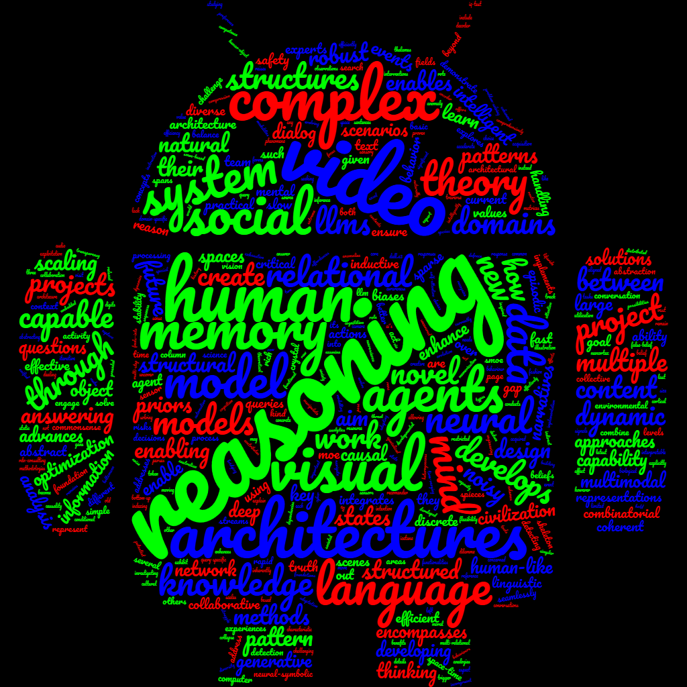

As AI becomes more capable and autonomous, the unit of intelligence that matters may be the network of interacting minds, tools, institutions and environments, not the individual model. Single-model benchmarks do not say how such systems perform, conflict, or stay accountable.
AI Future
Civilisational AI and the science of intelligence.
What determines whether a population of increasingly intelligent agents becomes a productive, adaptive and resilient civilisation, or an unstable and highly concentrated one? We are building a science of civilisational intelligence: how humans, AI systems and institutions collectively learn, coordinate, and adapt.

Collective intelligence is not set by individual intelligence alone. It emerges from capability, diversity, communication, memory, institutions, incentives, resources and scale acting together.
CIVITAS-AI is a three-year research programme planned for 2027–2029 at the Applied Artificial Intelligence Institute, Deakin University.
CIVITAS-AI
Three scientific aims and one laboratory.
The emphasis is on falsifiable, transferable, explanatory principles, not another generic multi-agent simulator.
Laws of collective intelligence
When do collectives scale, saturate or fail as population, capability and organisation grow? Theories are fitted on some agent populations and tested on withheld ones, against matched-resource baselines.
Dynamics of artificial civilisations
Causal mechanisms of institution formation, cooperation and cheating, concentration of power and knowledge, collapse and recovery in societies of autonomous agents.
Human–AI institutions
How to bring AI into group decisions while measuring human influence, accountability and epistemic independence, not just decision accuracy.
CIVITAS Lab
A reproducible laboratory for theory tests, controlled interventions and independent replication, reusing existing platforms where they fit.
- Collective scaling: predict the effect of population, capability and communication under matched budgets. This comes first.
- Diversity: when do heterogeneous weaker agents beat homogeneous stronger ones?
- Institutional emergence: when do locally evolved rules persist and outperform fixed ones?
- Failure and recovery: susceptibility to cheating, collusion and misinformation.
- Human agency: decision quality and actual human influence, measured separately.
- Baselines matched on compute, model calls, tools and information.
- Causal interventions, not correlations.
- Predictions written down before withheld tests are run.
- Findings repeated across model families, including non-LLM agents.
- Protocols and resources released so others can replicate.
Science of intelligence
Foundations that run alongside.
Physics of intelligence
First-principles accounts of intelligence as a physical, non-equilibrium process involving energy, memory, prediction, control, abstraction and structure transfer.
Low-energy and operator-first AI
Alternatives to scale-heavy AI, judged by adaptation cost as well as capability.
Embodiment
Embodied multisensory intelligence and world-coupled cognition.
In progress
Building the experimental science.
CIVITAS-AI starts in 2027. Design work is under way now.
Hypotheses and baselines
Competing hypotheses, core variables and strong baselines, set out before the first experiment.
CIVITAS Lab design
A reproducible laboratory with explicit-mechanism environments, controlled interventions and independent replication, built to be replicated independently.
Collective-scaling experiment
The first experiment: predict how population, capability and communication change collective performance under matched budgets, on withheld tasks.
CIVITAS-AI is assembling a multidisciplinary team across:
- Multi-agent learning and theoretical AI.
- Economics, computational social science and institutional design.
- Research engineering for experimental infrastructure.
- PhD students, research fellows and international partners in collective intelligence.
- Sponsors to launch the 2027–2029 programme.
We are growing the team and its partnerships. Students, postdocs, clinicians, researchers and sponsors are welcome to get in touch.
Join, partner, or support the workClinical care and scientific discovery are both collective processes, involving people, instruments, institutions and AI. Results on information aggregation, accountability and epistemic failure may transfer to the AI co-doctor and the AI co-scientist.